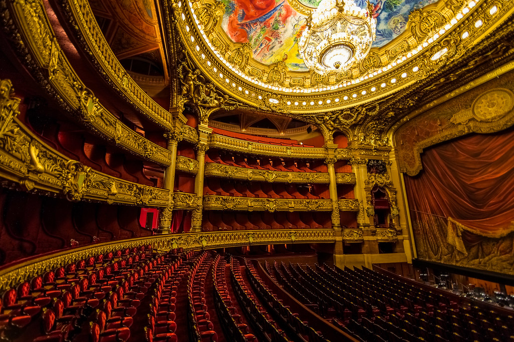

Музыка · 32-бөлім · Опера Music · Section 32 · Opera Музыка · Раздел 32 · Опера
🎭 Опера
🎭 Opera
🎭 Опера
Опера — ірі музыкалық-театрлық жанр, мұнда оқиға ән арқылы беріледі: кейіпкерлер сөйлемейді, оркестр сүйемелдеуімен ән салады. Opera is a large musical-theatre genre where the action is told through singing: the characters do not speak but sing, accompanied by an orchestra. Опера — крупный музыкально-театральный жанр, где действие выражается пением: герои не говорят, а поют, в сопровождении оркестра.
🎭 Опера деген не? 🎭 What Is Opera? 🎭 Что такое опера?
Операда оқиға әнмен айтылады: кейіпкерлер сөйлемейді, ал ән салады — оркестр оларды сүйемелдейді. In an opera the story is told by singing: the characters do not speak, they sing — and the orchestra accompanies them. В опере действие выражается пением: герои не говорят, а поют — оркестр их сопровождает.
Опера көп өнерді біріктіреді: музыка, ән, драма, поэзия (либретто), декорация, костюм, кейде би. Opera unites many arts: music, singing, drama, poetry (the libretto), scenery, costumes and sometimes dance. Опера объединяет много искусств: музыку, пение, драму, поэзию (либретто), декорации, костюмы, иногда танец.
Сондықтан операны «өнер синтезі» деп атайды — барлық өнер бір спектакльде қосылады. That is why opera is called a "synthesis of the arts" — all the arts come together in one performance. Поэтому оперу называют «синтезом искусств» — все искусства соединяются в одном спектакле.
💡 Опера — бұл спектакль, мұнда ән салады. Драмалық театрда сөйлейді, ал операда — ән арқылы сезімдер мен оқиға беріледі. 💡 Opera is a performance where people sing. In a drama theatre actors speak, but in opera feelings and the story are conveyed through song. 💡 Опера — это спектакль, где поют. В драматическом театре говорят, а в опере чувства и действие передаются через пение.

🏛️ Опера құрылысы 🏛️ The Structure of an Opera 🏛️ Строение оперы
Опера увертюрадан басталады — бұл оркестрлік кіріспе. Содан кейін актілер (действиелер) келеді, олар картиналар мен сахналарға бөлінеді. An opera begins with an overture — an orchestral introduction. Then come the acts, which are divided into scenes. Опера начинается с увертюры — оркестрового вступления. Затем идут действия (акты), которые делятся на картины и сцены.
Увертюра — оркестрлік вступление, опера басталар алдында. Overture — an orchestral introduction before the opera begins. Увертюра — оркестровое вступление перед началом оперы.
Актілер (действиелер) — операның үлкен бөліктері. Acts — the large parts of the opera. Действия (акты) — крупные части оперы.
Картиналар / сахналар — акт ішіндегі шағын бөліктер. Scenes — the smaller parts inside an act. Картины / сцены — небольшие части внутри акта.
🎤 Вокалдық нөмірлер 🎤 Vocal Numbers 🎤 Вокальные номера
| НөмірNumberНомер | Кім ән саладыWho singsКто поёт | Не үшінWhat forДля чего |
|---|---|---|
| 🎤 АрияAriaАрия | бір кейіпкер (соло)one character (solo)один герой (соло) | сезімдерін айтуto express feelingsвыразить чувства |
| 🗣 РечитативRecitativeРечитатив | бір кейіпкерone characterодин герой | оқиғаны жылжыту (ән-сөйлеу)to move the action (speech-song)двигать действие (пение-говор) |
| 👥 ДуэтDuetДуэт | екі кейіпкерtwo charactersдвое героев | бірге ән салу, диалогsinging together, dialogueпение вдвоём, диалог |
| 🎶 АнсамбльEnsembleАнсамбль | трио, квартет т.б.trio, quartet, etc.трио, квартет и т.д. | бірнеше дауыс қатарseveral voices togetherнесколько голосов вместе |
| 🧑🤝🧑 ХорChoirХор | көпшілік (халық)a large group (the people)масса (народ) | бұқараның әніthe singing of the crowdпение массы |
АрияAriaАрия
1РечитативRecitativeРечитатив
1ДуэтDuetДуэт
2АнсамбльEnsembleАнсамбль
3+ХорChoirХор
∞ОркестрOrchestraОркестр
🎼🎧 батырманы басып, операның дыбысын тыңдаңыз tap a button and hear the sound of opera нажмите кнопку и послушайте звучание оперы
💡 Ария — кейіпкердің жан сезімін ашатын кең, әнді соло. Увертюра — спектакльді ашатын күшті оркестрлік кіріспе. 💡 An aria is a broad, lyrical solo that reveals a character's feelings. An overture is the bold orchestral introduction that opens the performance. 💡 Ария — развёрнутый, певучий сольный номер, раскрывающий чувства героя. Увертюра — мощное оркестровое вступление, открывающее спектакль.
📜 Либретто — операның мәтіні 📜 The Libretto — the Text of an Opera 📜 Либретто — текст оперы

Либретто — операның әдеби мәтіні (сценарийі). Онда оқиға, кейіпкерлердің сөздері мен ариялардың мәтіні жазылған. The libretto is the literary text (the script) of an opera. It contains the story and the words of the characters and arias. Либретто — литературный текст (сценарий) оперы. В нём записаны сюжет, слова героев и тексты арий.
📌 Композитор музыка жазады, ал либреттист — мәтінді. Музыка мен мәтін бірге опера жасайды: бұл өнердің синтезі — музыка, ән, драма, поэзия, декорация мен костюм бір спектакльде қосылады. 📌 The composer writes the music, and the librettist writes the text. Together music and text make an opera: a synthesis of the arts — music, singing, drama, poetry, scenery and costumes united in one performance. 📌 Композитор пишет музыку, а либреттист — текст. Вместе музыка и текст создают оперу: это синтез искусств — музыка, пение, драма, поэзия, декорации и костюмы соединяются в одном спектакле.